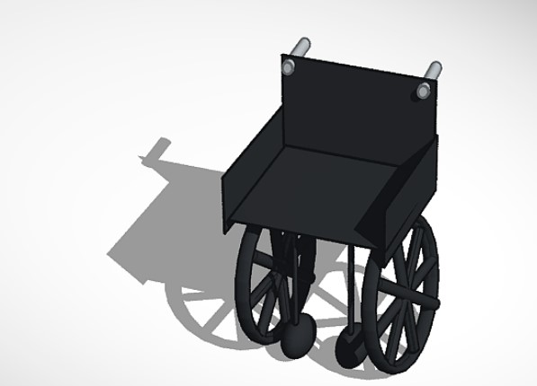
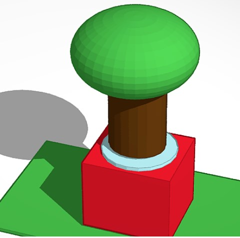
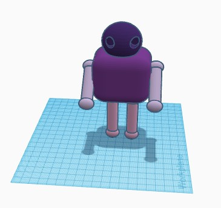

To view my badges on youracclaim.com:-
I have also created a game on scratch titled " Catch the fruit ". Read the instructions and enjoy playing it.
Instructions:-
Left Key to move left
Right Key to move right
Green flag to start
Red octagon to stop
Note:- The game will automatically end after 45 seconds
To view my official project page:-
I also created a chatbot using IBM cloud. Below is a recording of my conversation with my chatbot.

1st video:- Obstacle avoidance with ultrasonic sensor.
2nd video:- Line following with line following sensor.
  


Done by Krrish Lala 9N